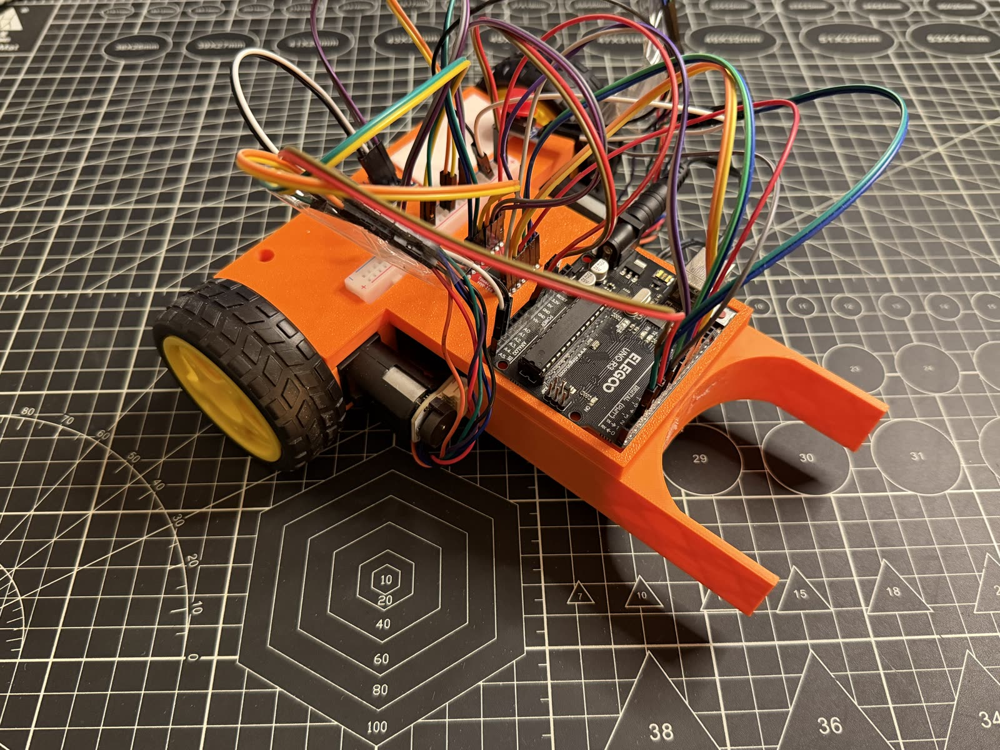
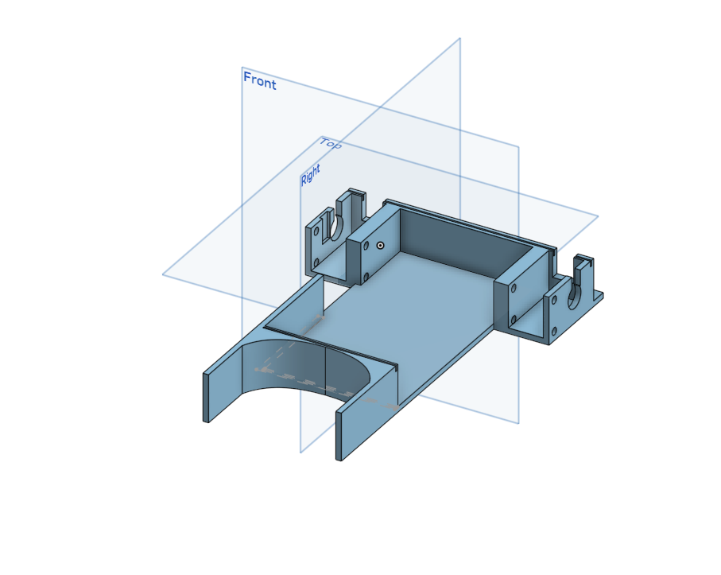

Robot Tour v2
A maze-navigating Arduino robot, rebuilt with a 3D-printed front guide and reworked wiring.

01 The problem
Robot Tour v1 could drive and turn, but reaching a target and lining up with it was inconsistent. Small errors in each turn added up over a run, so the robot often ended up off the mark. For v2 I wanted tighter control, so I added a 3D-printed front guide and a BNO055 orientation sensor to help it turn and aim more accurately.
02 Why I built it
Robot Tour is another Science Olympiad event, where the robot drives a course and tries to stop on a target point. After v1, I wanted a build that could hit the target more reliably. It was also my first time using an orientation sensor, so I could learn how to use its readings to control the robot's turns.
03 Tools, materials & software
| Microcontroller | Arduino Uno (Elegoo) |
|---|---|
| Drive | 2× TT gear motors with built-in encoders and yellow-hub wheels |
| Structure | 3D-printed chassis with an extended front guide arm |
| Prototyping | Half-size breadboard + jumper wires |
| Input | Momentary push button (start/control) |
| Orientation sensor | BNO055 9-axis IMU (heading/turns) |
| Motor driver | TB6612FNG dual motor driver |
| Power | 8 AA batteries |
| Software | Arduino IDE (C++) |
04 Prototype photos
Different angles of the v2 build. Tap any photo to view it larger.
05 CAD & diagrams
I designed the chassis in CAD before printing it, then added a front guide arm to help the robot line up with the course.

06 Testing process
Once the robot was built, I ran it through the course over and over to see how close it got to the target. After each run I adjusted the turns, the timing, and the sensor settings, then tried again to get it more consistent.
07 Challenges & failures
The encoders built into the TT motors gave me the most trouble. They were supposed to track how far each wheel turned so the robot could measure distance, but I had a hard time getting reliable readings out of them. That made it harder to get the robot to travel an exact distance and stop where I wanted.
08 What I changed after testing
The two big changes from v1 were the printed front guide arm and the BNO055 orientation sensor. v1 turned using timing alone, which drifted. With the sensor, the robot could check its real heading and correct itself, and the guide arm helped it line up with the course. I also cleaned up the wiring so it was easier to work with.
09 Final result
v2 was more accurate and more consistent than v1. With the orientation sensor helping it turn, the robot could follow the course and stop closer to the target more often.
10 What I'd improve next
I'd keep tuning how the robot uses the sensor so its turns are even more precise. Testing more course layouts would also help me find settings that hold up no matter where the target is.
11 Demo video
Short on-the-bench demo. Audio is muted by design.
Watch full build on YouTube